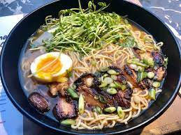

Chilli Pork Ramen

Description
This spicey pork ramen is delicious food for the soul with tender barbeque pork, thin soba noodles, aromatic corriander and a nice kick from the red chilli and lime wedge
Ingredients
- 2 Entrecote pork steaks
- 2 Tablespoons barbeque sauce
- 100g Thin soba noodles
- 500ml Chicken stock
- Bunch of corriander leaves, leaves picked
- Large handfull of beansprouts
- 1 Small red onion, peeled and thinly sliced
- 1 Red chilli, deseeded and thinly sliced
- 1 Lime, cut into wedges
- Teriyaki sauce
Steps
- Combine the pork with the barbeque sauce in a plastic bag, massage and set aside for one hour; Overnight in the fridge is even better
- Grill the pork on both sides for 3-4 minutes or until cooked. Allow to rest and then slice on the diagonal
- Cook the noodles according to the instructions on the packet, drian and refresh under cold water
- Heat the stock
- Combine the noodles, chilli ramen sauce, corriander leaves, beansprouts, onion and chilli
- Devide into two bowls
- Ladle over the hot stock, top with the sliced pork and serve with a wedge of lime and the teriyaki sauce